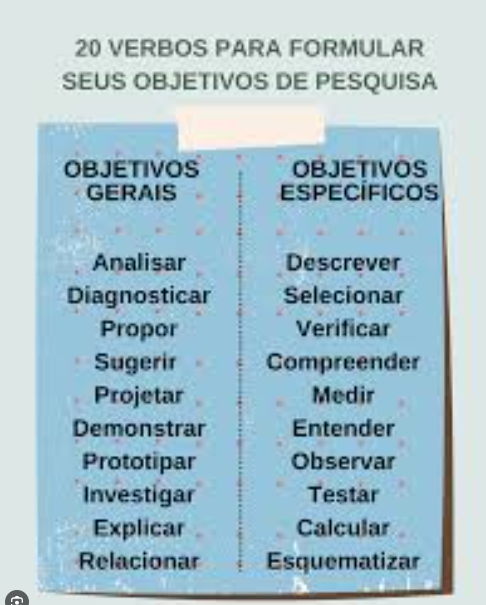
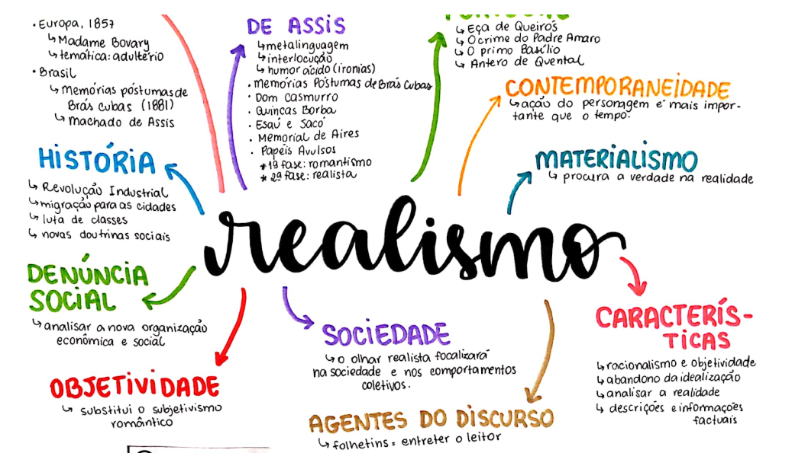
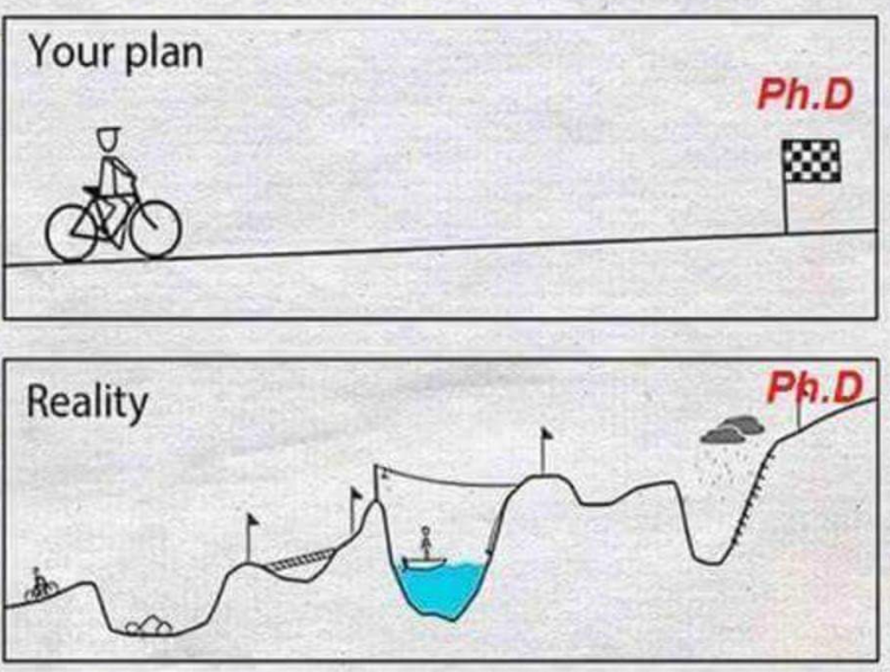

Aula 3: A Pergunta de Pesquisa e a Estrutura do Projeto
PPGBV - UFPE
Introdução
- Boas-vindas à semana 2.
- Foco: Pergunta e Projeto.
- Alinhamento com o PPGBV.
- Bases da pesquisa científica.
O Propósito da Pesquisa
- Busca pela verdade e realidade
- Escolha metodológica consciente
- Especialização do senso comum
- Construção metódica e racional

Desafios iniciais
- Complexidade da pesquisa
- Superação de obstáculos técnicos
- Exigência de discernimento aguçado
- Assimilação de requisitos formais (estrutura)
Centralidade da pergunta

- Alicerce de todo o edifício
- Chama que ilumina a descoberta
- Guia para coleta e análise
- Determina qualidade e aplicabilidade
Risco de falha
- Pergunta mal elaborada gera erro
- Risco de “bancarrota” da pesquisa
- Decisões confusas e imprecisas
- Falta de clareza informativa
O acrônimo FINGER

- Guia para pergunta sólida
- Critérios de valoração essenciais
- Centro de todas as etapas
- Discussão conjunta com orientador
F - Feasible (Factível)
- Acesso a participantes/espécimes
- Formação técnica
- Custos razoáveis e financiáveis
- Tempo de conclusão viável

I - Interesting (Interessante)
- Resposta gera interesse científico
- Motivação para o pesquisador
- Resolve problemas insolúveis
- Desvela novas percepções

N - Novel (Novo, Original)
- Fornece novos achados
- Amplia o saber existente
- Refuta resultados anteriores
- Foco em lacunas de evidência

G/E - Good & Ethical (Boa e Ética)

- Alinhamento com seu plano de carreira
- Risco baixo/aceitável
- Condução ética
- Respeito à bioética
R - Relevant (Relevante)

- Melhora o conhecimento científico
- Orienta políticas e práticas
- Impacto real na sociedade
- Justifica o investimento público
Parte 2
Delimitação do tema

- Seleção de tópico focalizado
- Evita abrangência excessiva
- Divisão por tempo e espaço
- Define o “ponto de vista”
Problematização
- Transformação do tema em dúvida
- Conhecimento das divergências
- Marcos de singularidade

Hipótese(s)
- Suposição provisória de resposta
- Guia para o planejamento prático
- Testável e passível de verificação
- Relação provável entre variáveis

Definição de objetivos
- Define a natureza do trabalho
- Responde “para que” e “para quem”
- Devem ser claros e diretos
- Delimitam o material a coletar

Comparando
GERAL
- Visão global e abrangente
- Conteúdo intrínseco do fenômeno
- Propósito central da pesquisa
- Indica a meta final do aluno
ESPECÍFICO
- Caráter concreto e instrumental
- Auxilia no alcance do geral
- Aplicação em situações particulares
- Identifica novos aspectos do problema
Justificativa

- Razões teóricas e práticas
- Demonstra pertinência e interesse
- Enfatiza estágio atual da teoria
Referencial Teórico
- Suporte e fundamentação básica
- Não é um glossário de termos
- Texto dissertativo ou mapa mental
- Construção de moldura conceitual

O Estado da Arte
- Desenvolvimento atual da ciência
- Mapeia tendências e hiatos
- Identifica excelência no assunto
- Requer atualização constante

Retextualização

- Esforço multi-cognitivo complexo
- Não é mera justaposição de ideias
- Transformação de dados em voz
- Base da originalidade acadêmica
Conclusão
- Projeto como plano de inferência
- Rigor garante segurança final
- “Todo perguntar é uma busca”
- Preparação para a coleta de dados
